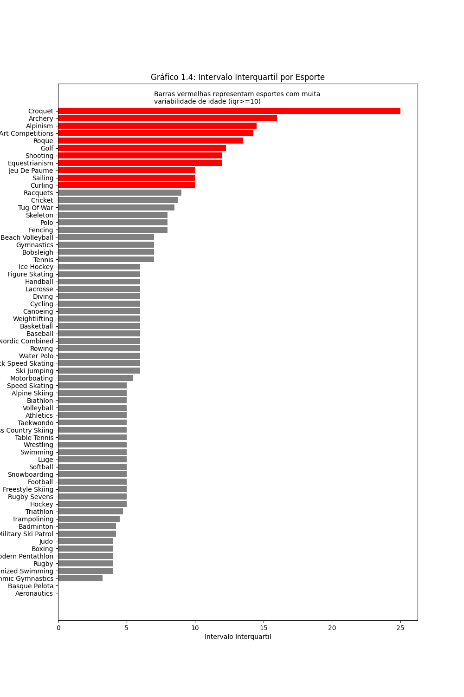
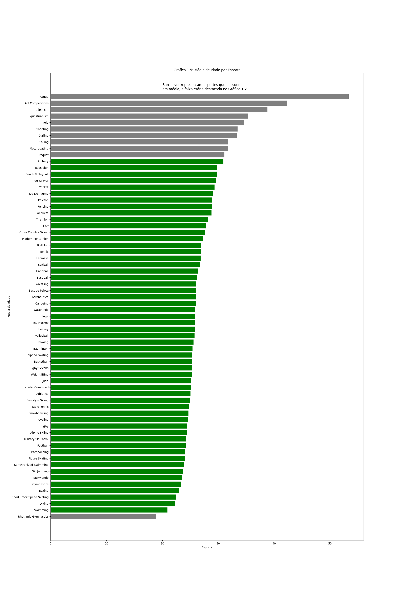

120 years of Olympic history: athletes and results

Os dados utilizados para gerar as visualizações foram encontrados no kaggle, em uma base entitulada 120 years of Olympic history: athletes and result. Essa é uma base que possui duas tabelas, em que somente a que contém os dados dos atletas e eventos foi utilizada. Com isso, as perguntas que nortearam a as visualizações foram:
- Existe uma idade em que se ganha mais medalhas?
- Como é a distribuição de idade por esporte entre os medalhistas?
- Existe um padrão específico entre altura/peso dos atletas para a maioria das modalidades?
- Ser anfitrião dos Jogos (Inverno e Verão) faz com que o país ganhe mais medalhas?
Existe uma idade em que se ganha mais medalhas?

Inicialmente, foi plotado o histograma, com o objetivo de ter uma visão mais geral. A partir dele é possível perceber que os atletas ganham mais medalhas, aproximadamente aos 23 anos. Já o grafico de barras abaixo permite uma análise mais aprofundada. Por ser interativo, permite visualizar, de forma organizada, quantas medalhas foram conquistadas para cada idade. Além disso, a diferença entre as cores das barras e a anotação feita permitem perceber com maior facilidade a faixa etária em que se ganha mais medalhas.
Como é a distribuição de idade por esporte entre os medalhistas?
A fim de visualizar a distribuição de idade por esporte entre os medalhistas, a visualizacao escolhida inicialmente foi o boxplot, que permite, por exemplo a percepção dos outliers e, por ser interativo, permite a análise para cada esporte em relação aos quartis, mediana e valor máximo, valor mínimo. Além disso, também permite a comparação entre os esportes. Entretnto, quando o objetivo é comparar, os gráficos abaixo são mais eficientes. Assim, o gráfico 1.4 destaca os esportes que possuem maior variabilidade (iqr>=10), enquanto o gráfico 1.5 destaca os esportes cuja idade média está no intervalo destacado no gráfico 1.1.
 Existe um padrão específico entre altura/peso dos atletas para a maioria das modalidades?
Ser anfitrião dos Jogos (Inverno e Verão) faz com que o país ganhe mais medalhas?

Devemos ressaltar aqui que os Jogos de inverno passaram a ser organizados depois dos jogos de verão, por esse motivo os dados tem inícios diferentes no eixo x. Também é interessante lembrar que, até determinado ponto, ambas as temporadas aconteciam no mesmo ano, mas depois passam a se alternar de dois em dois anos.
Os países que foram anfitriões dos Jogos de Inverno parecem ter muito menos medalhas do que os que foram anfitriões dos Jogos de Verão. A distância entre as linhas ciano e azul indicam a proporção de medalhas conseguidas pelo país anfitrião. A partir disso, é possível observar um declínio na quantidade de medalhas conseguidas pela nação anfitriã, se comparada a quantidade total de medalhas, em cada edição dos jogos com o passar dos anos.